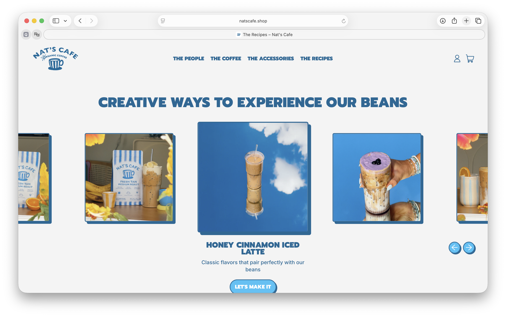
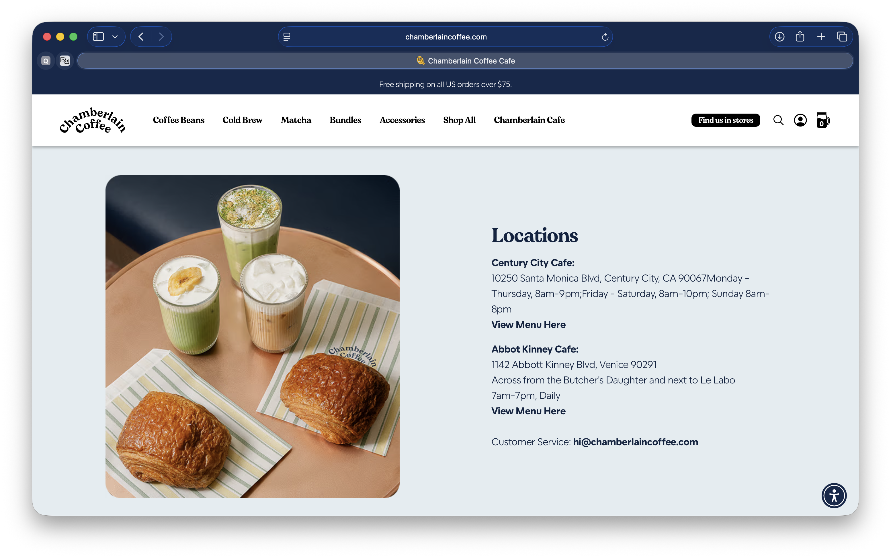
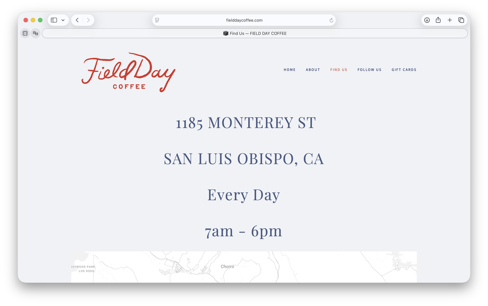

Final Project Proposal
Introduction
Central Coast Coffee Co.
Central Coast Coffee Co. is a locally owned coffee shop located in San Luis Obispo, California. We serve handcrafted espresso drinks, fresh pastries, breakfast items, and light lunches in an environment inspired by the dreamy, relaxed nature of the Central Coast lifestyle. Our goal is to provide high-quality coffee, friendly service, and a comfortable place where customers can study, work, relax, or spend time with friends.
Target Audience
Central Coast Coffee Co. serves people who are looking for quality coffee, fresh food, and a comfortable place to spend time. Visitors may want a convenient drink before class or work, a quiet place to study, a welcoming setting for meeting friends, or a local café to visit while exploring San Luis Obispo.
The primary goals of website visitors are to view the menu and prices, learn about the café, check its hours and location, and decide what they would like to order before arriving. The website should make this information easy to find while communicating the café’s friendly, creative, and relaxed personality.
Comparative Analysis
Nat’s Cafe
Nat’s Cafe has a warm and playful design that reflects its friendly brand. Large photography, bright colors, and simple navigation immediately introduce visitors to the business and its products. The site also highlights coffee recipes, creating a personal connection with customers while making the content easy to explore.


Chamberlain Coffee
Chamberlain Coffee combines clean typography, large lifestyle photography, and organized navigation to create a modern coffee shop experience. The website clearly separates shopping, café locations, and company information while maintaining a fun and approachable brand identity.


Field Day Coffee
Field Day Coffee uses a clean, minimalist layout with generous white space and welcoming photography. The website emphasizes the café’s atmosphere while making its location and hours easy to find. Its simple navigation and consistent visual identity create a calm and inviting experience.


Website Content
Home
Central Coast Coffee Co.
Freshly brewed and locally loved.
[People enjoying coffee and pastries inside a bright café.]
Welcome to Central Coast Coffee Co., where handcrafted drinks and fresh food come together in a warm and inviting atmosphere. Whether you are grabbing a quick latte before class, meeting friends for brunch, or studying for a big exam, we are here to make every visit memorable.
About
About Us
[Barista preparing an espresso drink behind a café counter.]
Central Coast Coffee Co. began with one simple idea: great coffee brings people together. Inspired by California’s Central Coast, we carefully source quality beans and prepare every drink with attention to detail. From classic favorites to seasonal flavors and playful creations, we strive to make every visit a little brighter and every cup something to look forward to.
Our café offers a relaxing space where students, professionals, local residents, and visitors can enjoy fresh pastries, breakfast favorites, and specialty coffee while connecting with their community.
Menu
Coffee
[Fresh latte with latte art on a café table.]
Drip Coffee
$3.25
Freshly brewed medium-roast coffee made daily.
Iced Latte
$6.50
Espresso with chilled milk and your choice of house-made syrup.
Freddo Cappuccino
$5.75
A refreshing double espresso served over ice with smooth, creamy cold foam.
Cold Brew
$4.75
Slow-steeped coffee served over ice.
Add house-made cold foam for $0.75. Choose from Vanilla, Sweet Cream, Banana, Strawberry, Honey Sea Salt, or Coconut.
House-Made Flavor Options
+$0.50
Choose from Vanilla, Brown Sugar, Honey Cinnamon, Cookie Butter, Lavender, Birthday Cake, Vanilla Bean, or Sugar-Free Vanilla.
Breakfast
[Breakfast sandwich, coffee, and pastry arranged on a wooden table.]
Avocado Toast
$8.50
Sourdough toast topped with avocado, tomatoes, and everything seasoning.
Breakfast Burrito
$9.95
Eggs, potatoes, cheese, and salsa wrapped in a warm flour tortilla.
Blueberry Muffin
$3.95
Freshly baked each morning with sweet blueberries.
Chocolate Croissant
$4.25
A buttery, flaky croissant filled with rich chocolate.
Location
Visit Us
[Coffee shop storefront with outdoor seating and customers near the entrance.]
Address
411 Grand Avenue
San Luis Obispo, CA 93401
Hours
Monday–Friday
6:00 AM–5:00 PM
Saturday–Sunday
7:00 AM–4:00 PM
Phone
(805) 123-4567
Come enjoy handcrafted coffee, fresh pastries, and a welcoming atmosphere in the heart of San Luis Obispo.